Für alle Kinder, die schon einmal überlegt haben, ob ein Keks wirklich ein Bösewicht ist. (Er ist keiner.)
Mit Calli, Mira, Noah — und einem kleinen Zucker-Monster namens Schlecki.
Essen ist kein Test. Es gibt keine Note dafür.
Dein Körper ist ein kleines, fröhliches Kraftwerk, und Essen ist sein Brennstoff.
Manches Essen gibt Energie für lange, manches schnelle Energie, die schnell wieder geht, manches baut dich groß und stark. Und manches schmeckt einfach schön — das darf auch sein.
In diesem Buch lernst du, deinem Bauch zuzuhören und bunt zu wählen. Ganz ohne Verbote.
Dieses Buch macht kein Kind zum Ernährungspolizisten. Es zeigt Essen als etwas Freundliches: bunt, abwechslungsreich, mit Genuss. Kein Lebensmittel ist ein Bösewicht, kein Kind muss sich für Hunger, Appetit oder Lieblingssüßes schämen.
Drei Fragen helfen beim Vorlesen: Was schmeckt dir? Was tut deinem Körper gut? Wie fühlt sich dein Bauch an — hungrig, satt oder unsicher? So entsteht Neugier statt Druck.
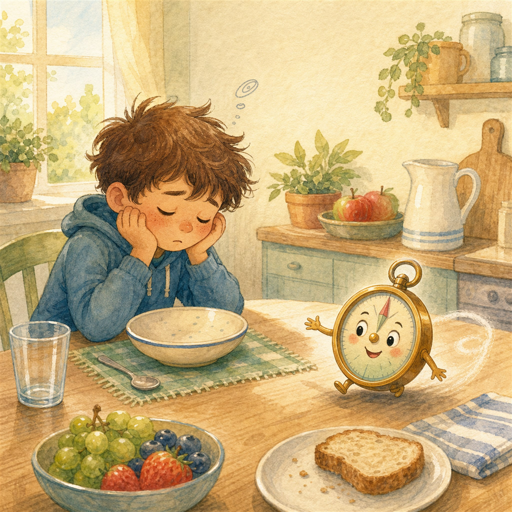
Am Morgen saß Noah am Tisch und ließ den Kopf hängen wie eine müde Sonnenblume.
„Mein Motor springt nicht an", murmelte er.
Calli rollte heran. „Kein Wunder. Über Nacht hat dein Körper gearbeitet — jetzt ist dein Tank fast leer."
„Und wie tanke ich?", fragte Noah.
„Mit Frühstück", sagte Calli. „Dein erstes Essen ist der Anlasser für den ganzen Vormittag."
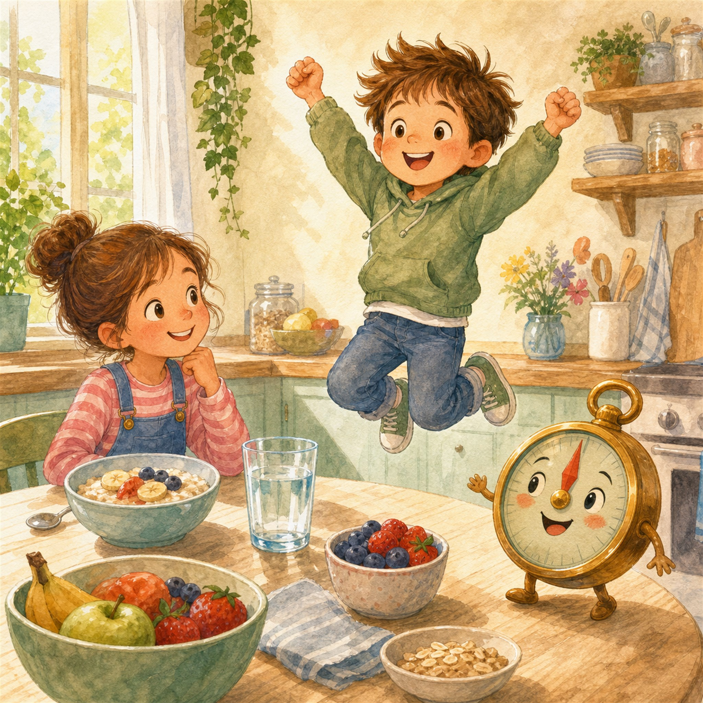
Mira stellte Haferflocken, Obst und ein Glas Wasser hin.
Noah aß — und langsam kam die Farbe zurück in seinen Tag.
„Oh", sagte er. „Mein Motor brummt."
„Ein gutes Frühstück gibt Energie, die lange hält", sagte Calli. „Vollkorn, Obst, ein bisschen Milch oder Joghurt — das ist Sprit für Stunden."
Noah stand auf und machte einen kleinen Freudensprung. „Vollgetankt!"
Callis Schlau-Seite
Über Nacht verbraucht dein Körper Energie; morgens ist der Tank fast leer.
Ein Frühstück mit Vollkorn, Obst und etwas Eiweiß (Milch, Joghurt, Ei) hält lange.
Wer morgens wenig Hunger hat, darf klein starten: ein Stück Obst, ein Schluck Milch.
Frühstück muss nicht groß sein — nur freundlich.
Callis Satz für dieses Kapitel
Morgens erst tanken, dann durchstarten.
Mitmach-Kompass
Wähle etwas Sattmachendes: Vollkornbrot, Haferflocken oder Müsli.
Wähle etwas Buntes: Obst oder Gemüse.
Wähle etwas zum Trinken: am besten Wasser oder Milch.
Fertig ist dein Motor-Frühstück.
„Ich nehme Haferflocken, Banane und Milch", sagte Mira. „Ich auch", sagte Noah, „aber mit mehr Banane."
Kein Kind muss morgens viel essen — der Appetit ist morgens sehr unterschiedlich.
Hilfreich ist ein kleines, erreichbares Angebot ohne Druck: etwas Sattmachendes, etwas Obst oder Gemüse, ein Getränk. Auch ein kleiner Start zählt. Ein entspanntes Frühstück ist wertvoller als ein volles, erkämpftes.
Am Mittag deckte Mira den Tisch: Tomate, Gurke, Karotte, ein Stück Käse, Vollkornbrot und eine Handvoll Beeren.
Noah kniff die Augen zusammen. „Dein Teller sieht aus wie ein Regenbogen, der Hunger hat."
„Sehr gut beobachtet", sagte Calli und rollte auf den Tisch. „Heute reisen wir dorthin, wo dein Essen hingeht. In die Bauch-Sortierstation."
Noahs Bauch machte schon mal: knurr. „Er ist einverstanden", sagte Calli.
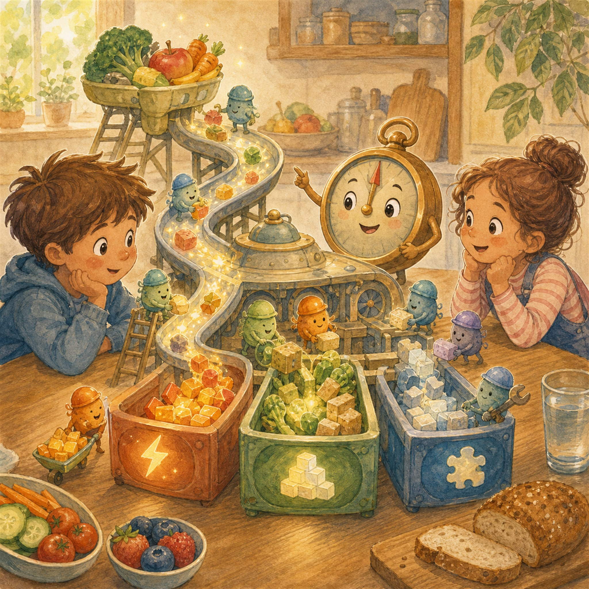
Neben dem Teller erschien eine kleine, fröhliche Rutsche. Jeder Bissen sauste hinunter in die Sortierstation, wo winzige Helfer sortierten.
„Manche Bausteine werden Energie zum Toben", erklärte Calli. „Manche werden Baumaterial, damit du wächst. Und manche sind kleine Reparatur-Teile."
Noah staunte. „In meinem Bauch ist eine Baustelle?"
„Eine sehr fleißige", sagte Calli. „Tag und Nacht geöffnet."
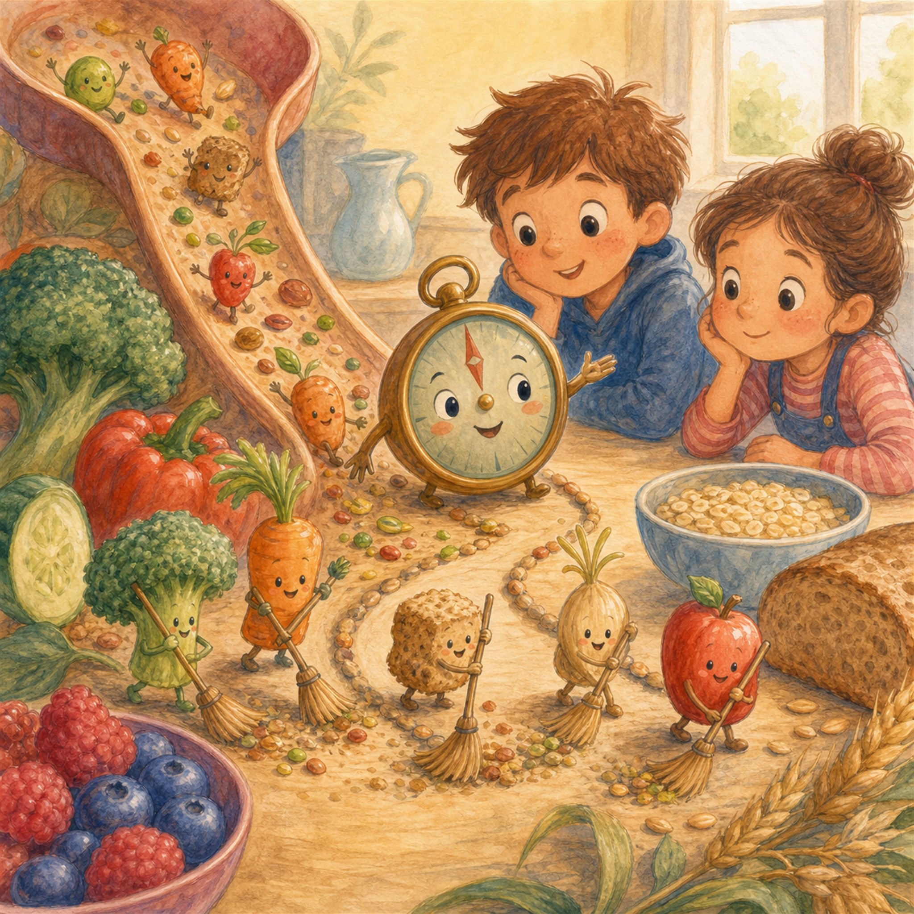
Am Ende der Rutsche warteten kleine Kehr-Helfer mit Besen.
„Wer seid ihr?", fragte Mira.
„Das sind die Ballaststoffe", sagte Calli. „Sie stecken in Gemüse, Obst und Vollkorn. Sie helfen, dass im Bauch alles schön in Bewegung bleibt."
Noah nickte ernst. „Also eine Putzkolonne für innen."
„Genau. Und sie mögen bunte Teller besonders gern."
Callis Schlau-Seite
Bunt essen bringt viele verschiedene Bausteine: Vitamine, Mineralstoffe, Ballaststoffe.
Obst und Gemüse in vielen Farben liefern viele verschiedene Kräfte.
Vollkorn macht oft länger satt als sehr helles Brot.
Kein einzelnes Essen macht dich allein gesund oder ungesund. Es kommt auf viele kleine Male an.
Callis Satz für dieses Kapitel
Iss bunt — dann bekommt dein Körper ein Überraschungspaket.
Mitmach-Kompass
Schau auf deinen Teller.
Suche etwas Rotes.
Suche etwas Grünes.
Suche etwas Gelbes oder Oranges.
Suche etwas Dunkelblaues oder Lila.
Wie viele Farben hast du? Profi-Ziel: fünf Farben an einem Tag.
„Ich habe drei Farben und einen Krümel", sagte Noah. „Zählt der Krümel?" — „Der Krümel ist tapfer", sagte Calli, „aber er zählt nicht."
Kinder essen leichter bunt, wenn Vielfalt normal und druckfrei angeboten wird.
Hilfreich: verschiedene Farben sichtbar hinstellen, selbst mitessen, Neues klein anbieten. Weniger hilfreich: Teller-leer-Pflicht oder Lob und Tadel für Mengen. Ein bunter Alltag über die Woche zählt mehr als der perfekte einzelne Teller.
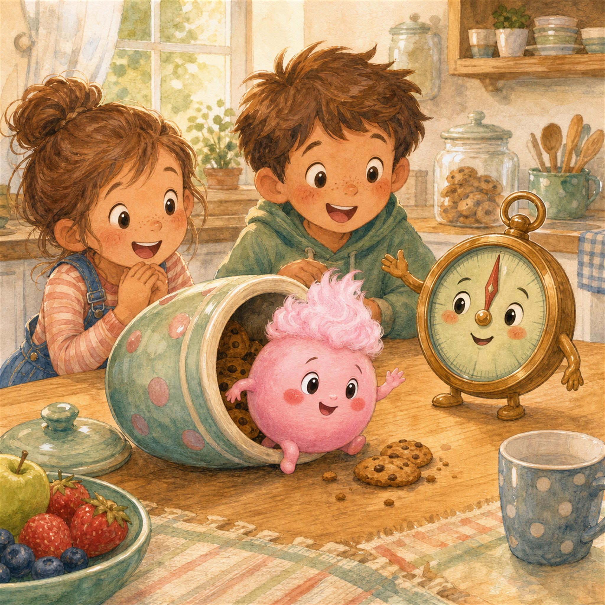
Plötzlich wackelte die Keksdose. Heraus purzelte ein kleines, rundes, rosa Wesen mit Zuckerwatte-Haaren.
„Hallo", sagte es schüchtern. „Ich bin Schlecki. Ich wohne bei den süßen Sachen."
Noah rief begeistert: „Ein Monster!" — „Ein sehr höfliches Monster", sagte Schlecki und verbeugte sich.
„Schlecki ist kein Bösewicht", sagte Calli. „Aber er ist ein kleiner Aufdreher. Pass auf."
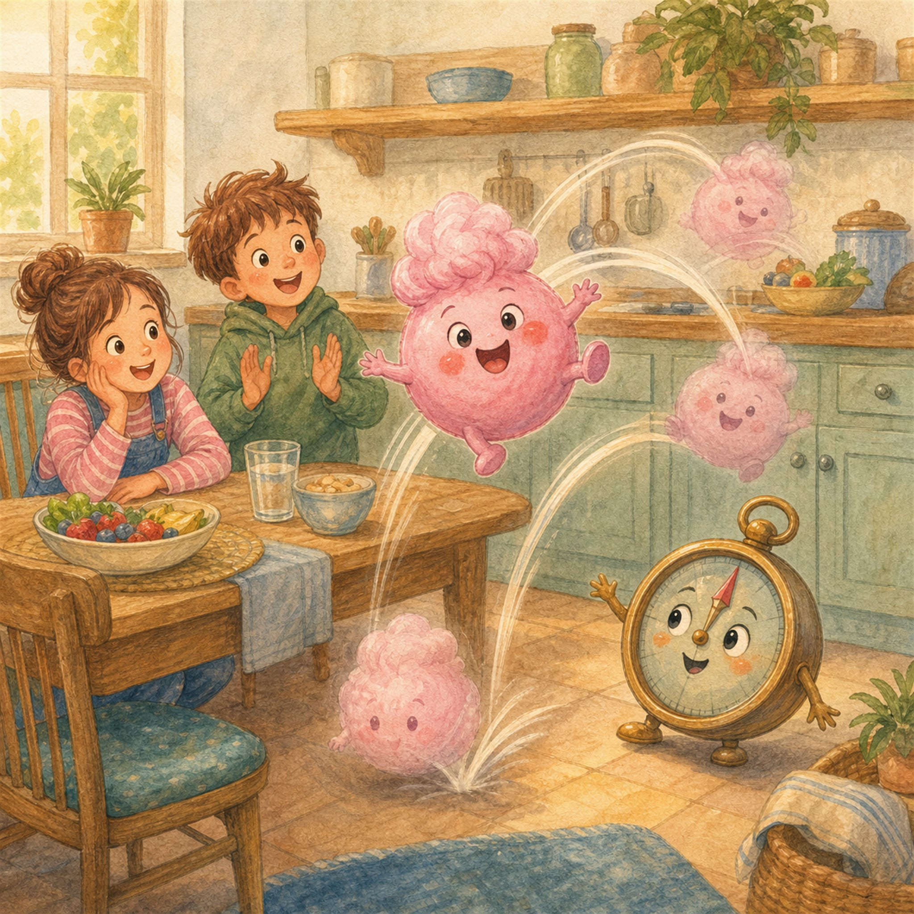
Noah nahm ein Gummibärchen — und Schlecki machte SPRING.
Er hüpfte durch die Küche wie ein Flummi, immer schneller, kicherte und wirbelte.
„Wuuuh!", rief Schlecki. „Zucker gibt Blitz-Energie! Schnell, schnell, schnell!"
Mira lachte. „Er ist wie ein aufgezogenes Spielzeug."
„Genau", sagte Calli. „Süßes gibt Energie, die sehr schnell kommt."
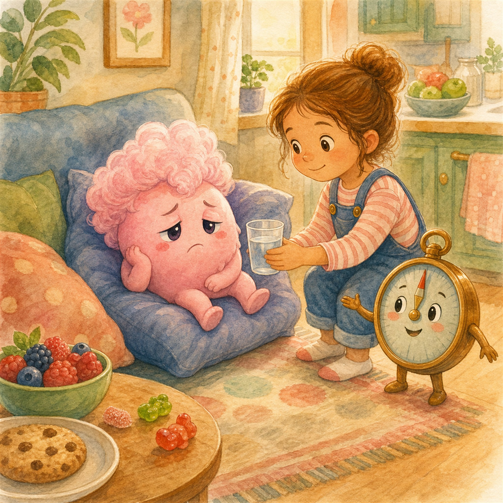
Doch dann, plopp, war die Blitz-Energie weg. Schlecki sank auf das Sofakissen, ganz schlapp, und maulte ein bisschen.
„Mir ist langweilig … und quengelig … und ich weiß nicht, warum."
„Das ist das Zucker-Tief", sagte Calli sanft. „Schnelle Energie geht auch schnell wieder. Danach fühlt man sich oft müde oder grummelig."
Mira brachte Schlecki ein Glas Wasser. „Besser?" — „Ein bisschen", schniefte Schlecki.
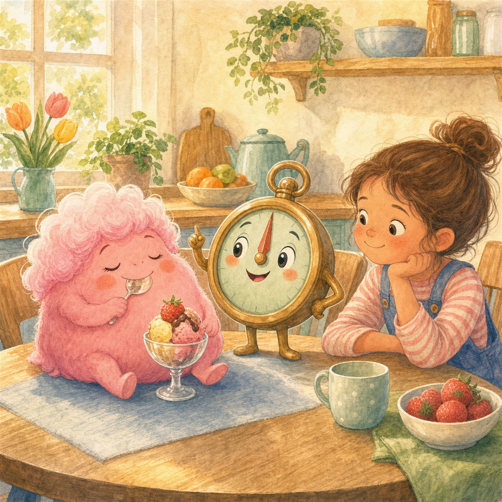
Am Samstag bekam Schlecki ein Eis. „Schling nicht", sagte Calli freundlich. „Genieße."
Schlecki hielt inne. Er leckte langsam. Er schmeckte richtig hin.
„Ohhh", sagte er. „So schmeckt es viel länger."
„Das ist der Trick", sagte Calli. „Süßes in Ruhe genießen macht glücklicher als schnell und viel."
Mira nickte. „Ein Eis mit Aufmerksamkeit ist zwei Eis wert."
Callis Schlau-Seite
Zucker gibt schnelle Energie, die schnell wieder verschwindet.
In mancher Limo-Flasche stecken erstaunlich viele Stückchen Zucker.
Süßes ist nicht verboten — es ist eben für manchmal, nicht für immer.
Süßes in Ruhe genießen ist schöner als schnell und viel. Danach tut Bewegung oder Wasser gut.
Callis Satz für dieses Kapitel
Süßes ist ein netter Gast — aber er darf nicht dauernd bleiben.
Mitmach-Kompass
Denk an dein Frühstück.
Was davon ist Immer-Essen (Obst, Gemüse, Brot, Wasser)?
Was davon ist Manchmal-Essen (Süßes, Limo)?
Beides ist okay.
Frag dich nur: Hatte ich heute schon viel Buntes?
„Ich hatte einen Apfel und einen Keks", sagte Noah. „Der Apfel ist immer, der Keks ist manchmal." — „Perfekt sortiert", sagte Calli.
Süßigkeiten zu verteufeln macht sie oft nur spannender.
Hilfreich ist der ruhige Rahmen „Manchmal-Essen": Süßes hat seinen Platz, ohne Drama und ohne Belohnungs-System. Kinder, die keine Angst und keine Scham mit Essen verbinden, entwickeln leichter ein gutes Bauchgefühl. Verbote und Heimlichkeit sind selten hilfreich.
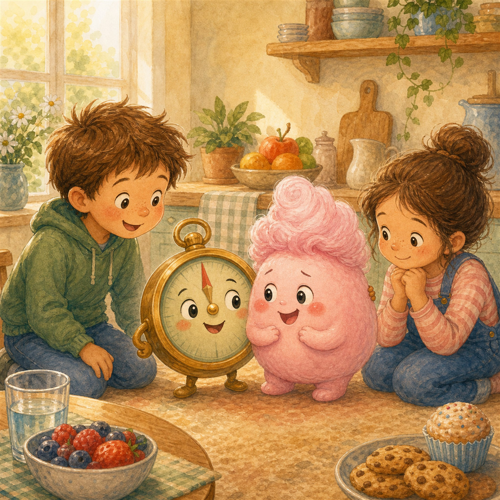
Schlecki wurde ganz still. „Bin ich … schlimm?"
„Überhaupt nicht", sagte Calli und legte einen Kompass-Arm um ihn. „Kein Essen ist ein Bösewicht. Du gehörst dazu — nur eben in kleinen Mengen und mit Pause."
Schlecki strahlte. „Also darf ich zum Geburtstag kommen?"
„Zu jedem", sagte Mira. „Aber du bringst bitte auch die Gemüse-Bande mit."
„Die … wen?", fragte Noah.
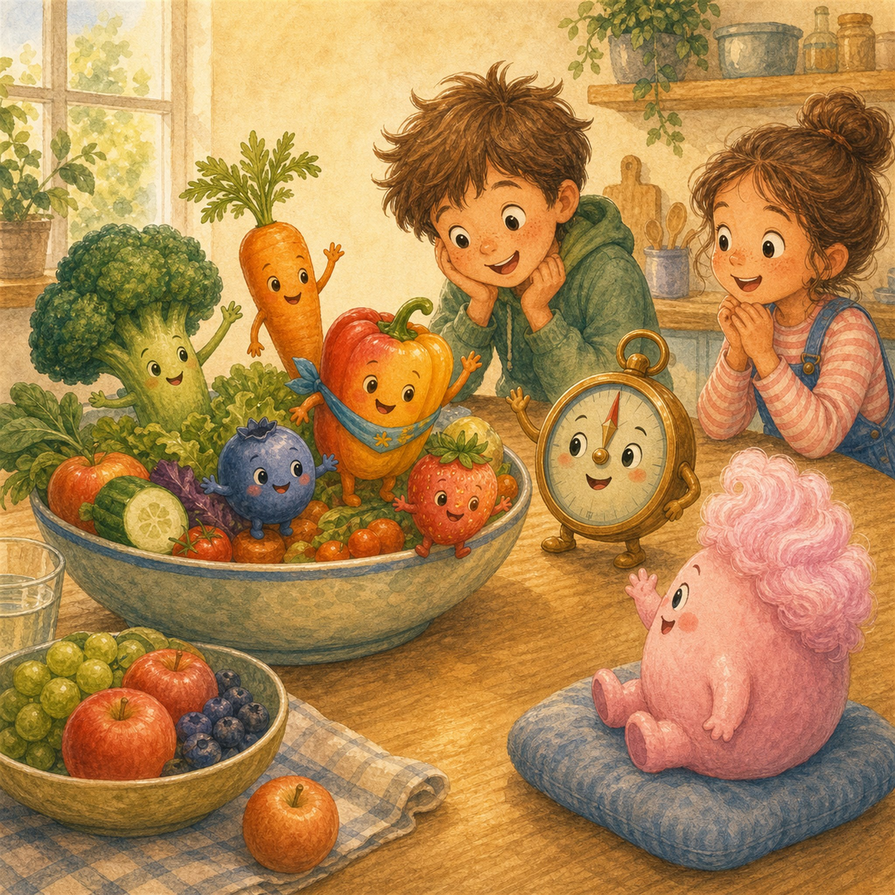
Die Gemüseschale begann zu wackeln. Heraus kletterten vier fröhliche Gestalten: Bruno Brokkoli, Karla Karotte, Pia Paprika und die Beeren-Zwillinge Blau und Erdi.
„Wir sind die Gemüse-Bande!", riefen sie im Chor.
„Und wir liefern Immer-Essen", sagte Bruno mit tiefer Stimme. „Energie für lange, Bausteine und Kräfte."
Schlecki winkte schüchtern. Karla winkte zurück. Es war der Beginn einer schönen Freundschaft.
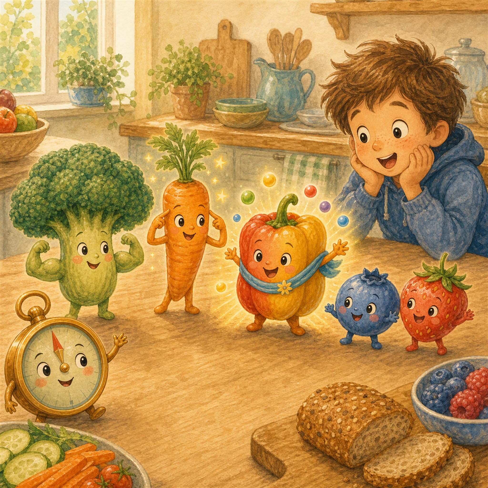
Jeder hatte eine Kraft. Bruno Brokkoli machte stark und half der Abwehr. Karla Karotte war gut für die Augen — sie sah sogar im Halbdunkel den letzten Keks. Pia Paprika steckte voller bunter Vitamine. Und die Beeren-Zwillinge bewiesen: Auch Obst kann süß und lecker sein.
„Ihr seid ja ein ganzes Superhelden-Team", sagte Noah.
„Ohne Umhang", sagte Karla. „Aber mit Vitaminen."
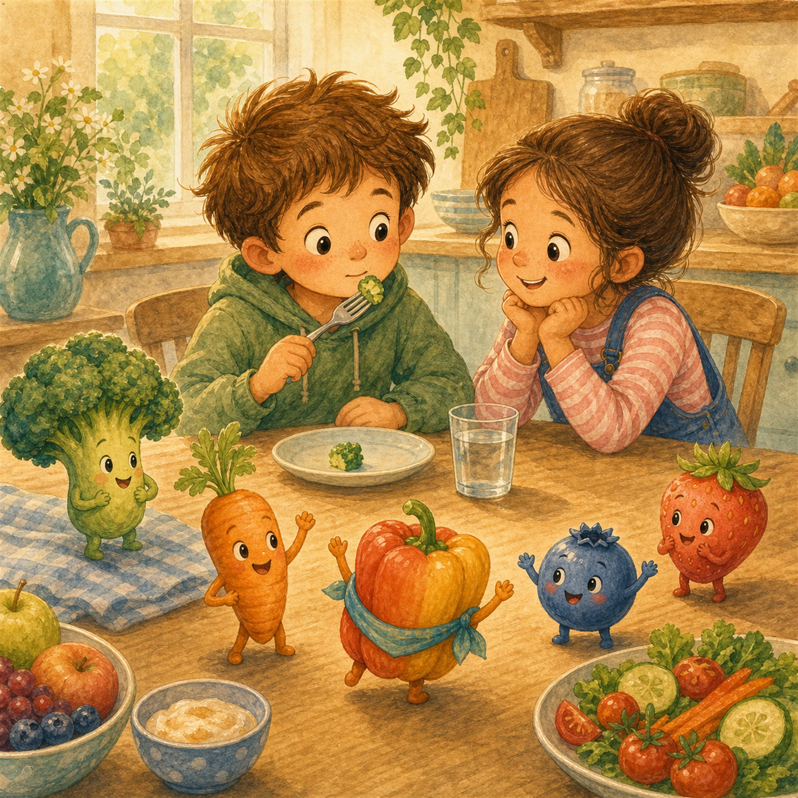
„Wer traut sich?", fragte Pia Paprika. Auf dem Tisch lag ein Gemüse, das Noah noch nie probiert hatte.
Noah schaute es an. Er roch daran. Die Gemüse-Bande hielt den Atem an.
Noah nahm einen winzigen Probier-Bissen. „Hm", sagte er. „Ungewohnt. Aber gar nicht schlimm."
Die Bande jubelte. „Du musst es nicht lieben", sagte Bruno. „Aber du warst mutig. Und Mut darf man üben."
Callis Schlau-Seite
Verschiedene Farben bringen verschiedene Vitamine und Mineralstoffe.
Karotten enthalten Stoffe, die gut für die Augen sind.
Beeren sind süß — und trotzdem Immer-Essen.
Du musst nicht alles mögen. Aber es lohnt sich, Neues immer wieder zu probieren.
Callis Satz für dieses Kapitel
Dein Teller darf ein buntes Team sein — je mehr Farben, desto mehr Kräfte.
Mitmach-Kompass
Such dir ein Gemüse oder Obst, das du noch nicht gut kennst.
Schau es an. Rieche daran.
Nimm einen winzigen Probier-Bissen.
Du musst es nicht mögen — heute nicht.
Wusstest du? Manche Sachen schmecken erst nach vielen Versuchen gut.
„Ich probiere Paprika", sagte Mira mutig. „Schmeckt … knackig." — „Das ist Probier-Mut", sagte Calli stolz.
Neue Lebensmittel brauchen oft viele ruhige Begegnungen — manchmal zehn oder mehr — bis sie akzeptiert werden.
Kleine Portionen, kein Zwang, kein „nur ein Bissen noch". Vorbild wirkt stärker als Aufforderung. Ablehnung heute heißt nicht Ablehnung für immer.
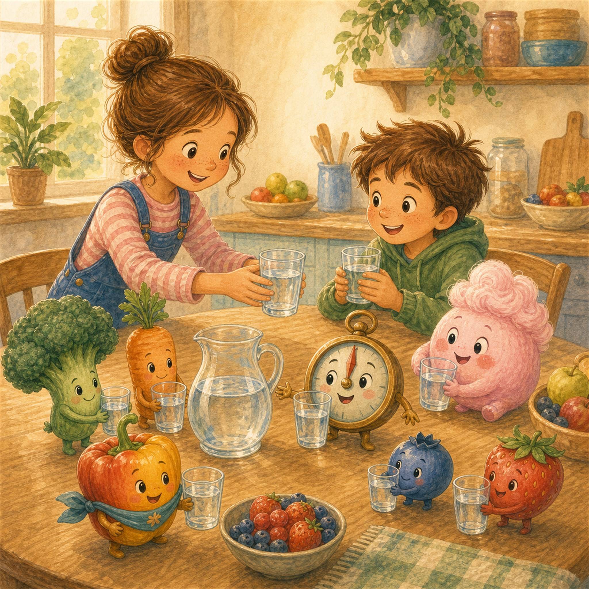
Vom vielen Reden bekamen alle Durst. Mira holte für jeden ein Glas Wasser. Sogar Schlecki bekam eines.
„Wasser ist der beste Durstlöscher für jeden Tag", sagte Calli. „Es ist wie ein freundlicher Lieferdienst: Es bringt alles im Körper dorthin, wo es gebraucht wird."
Noah trank und sagte mit tiefer Stimme: „Lieferung angekommen."
„Aaaah", machten alle. Sogar Bruno Brokkoli.
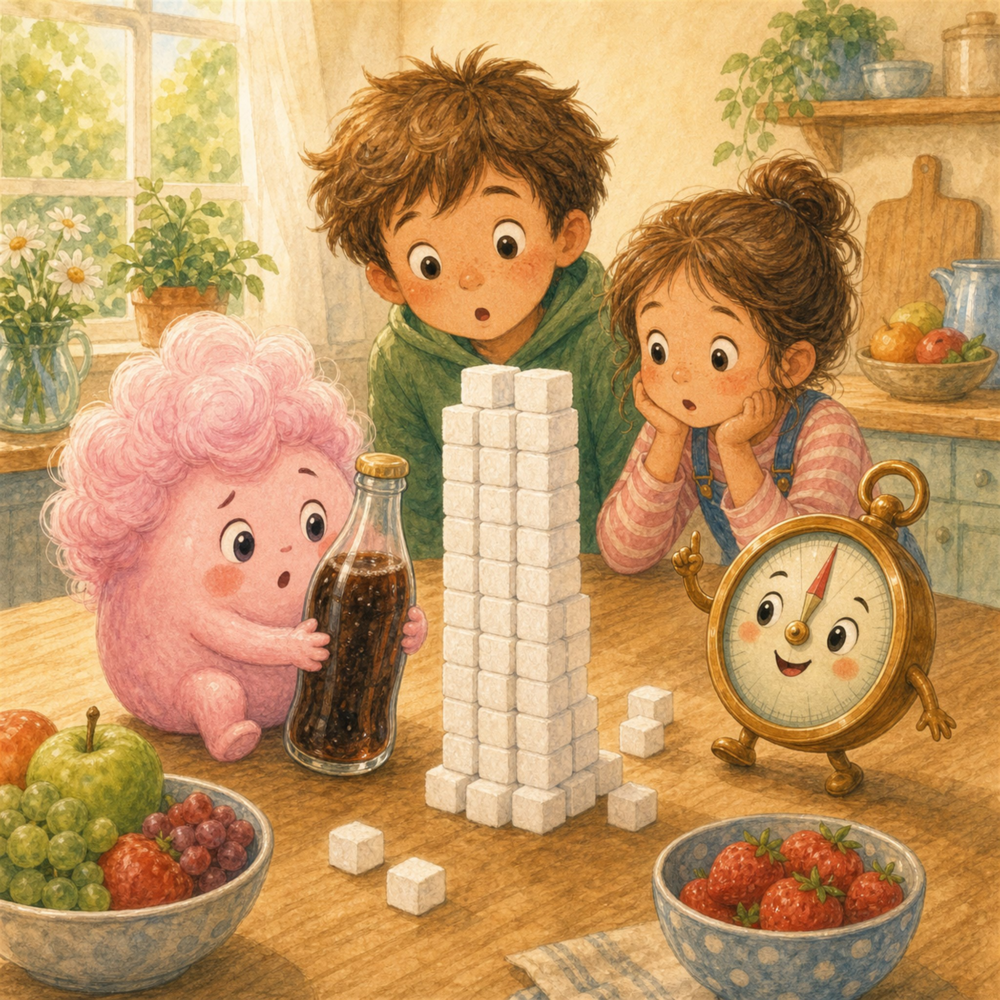
Schlecki zog schüchtern eine Limo-Flasche hervor. Calli stellte kleine Zuckerstückchen daneben — ein ganzer Turm.
„So viel Zucker steckt oft in einer einzigen Flasche Limo", sagte er.
Schlecki staunte. „So viel? Das würde ja sogar mir zu viel."
„Limo ist auch Manchmal-Essen", sagte Calli. „Für den Durst ist Wasser der Champion."
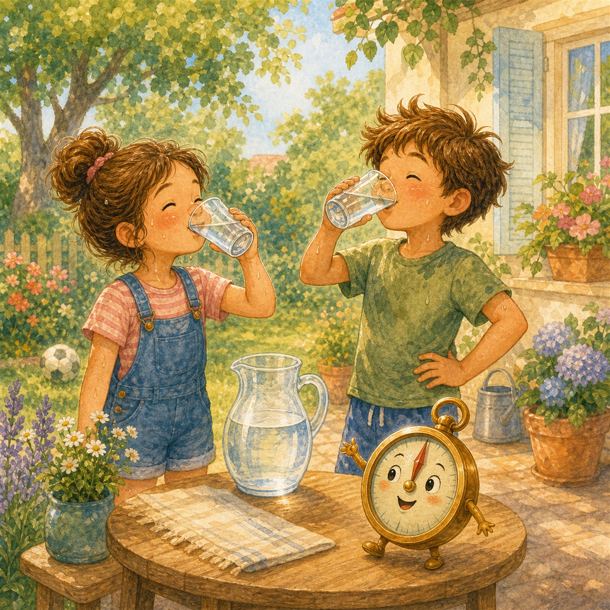
Nach dem Toben im Garten kamen alle zurück, rote Wangen, außer Puste.
„Zuerst?", fragte Mira. „Wasser!", riefen alle.
Jeder trank ein großes Glas.
„Nach dem Bewegen hat dein Körper besonders Durst", sagte Calli. „Dann ist Wasser der beste Freund."
Noah wischte sich die Stirn. „Mein Tank ist wieder voll — der Wasser-Tank."
Callis Schlau-Seite
Wasser hilft im Körper beim Transportieren, Denken, Rennen — sogar beim Lachen.
Dein Mund wird trocken und dein Kopf müde, wenn Wasser fehlt. Das ist Durst-Post.
Süße Getränke sind Manchmal-Getränke.
Trink, bevor du ganz doll durstig bist. Nach dem Toben zuerst Wasser.
Callis Satz für dieses Kapitel
Bei Durst nicht warten — Wasser gießen.
Mitmach-Kompass
Stell dir morgens ein Glas oder eine Flasche Wasser sichtbar hin.
Jedes Mal, wenn du trinkst, mach einmal „Aaaah" wie eine frisch gegossene Blume.
Nach dem Toben zuerst Wasser.
Trockener Mund? Das ist ein Signal.
„Ich habe heute schon vier Mal Aaaah gemacht", sagte Noah. „Fünf", sagte Schlecki. „Ich habe heimlich mitgezählt."
Wasser wird selbstverständlicher, wenn es leicht erreichbar und sichtbar ist.
Hilfreich: Wasser griffbereit hinstellen, selbst dazu greifen, süße Getränke als Ausnahme behandeln. Bei Durst zuerst Wasser anbieten. So verbindet der Körper Durst mit Wasser — ganz ohne Regeln.
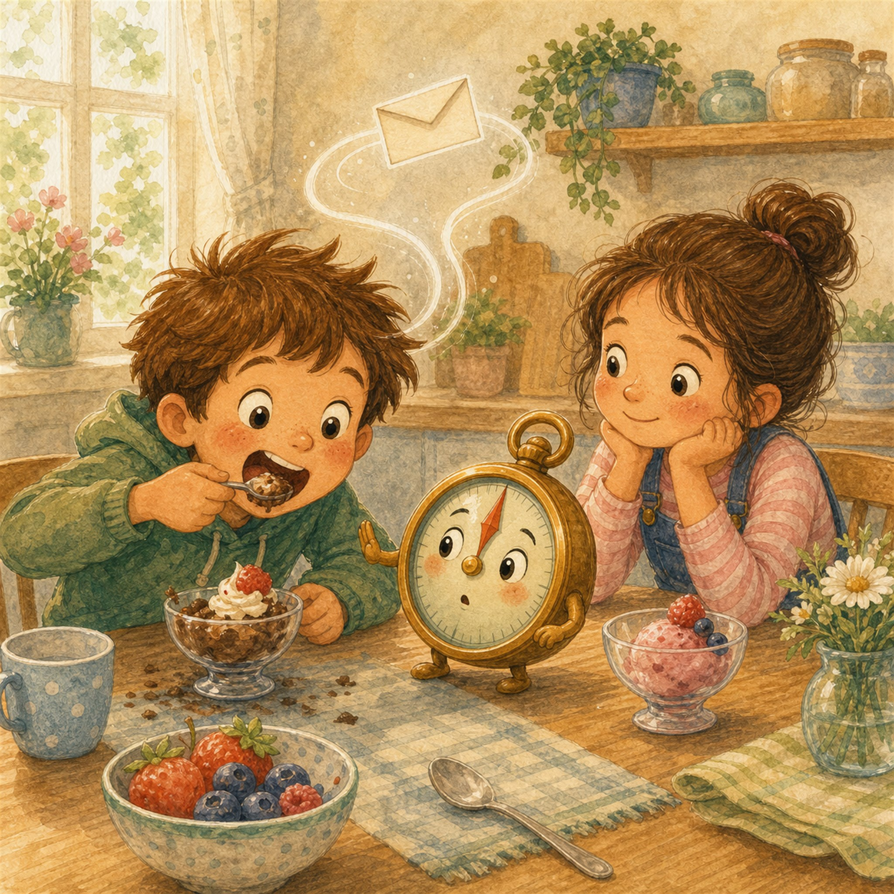
Beim Nachtisch aß Noah sehr schnell. Sein Löffel sah aus, als würde er trainieren.
„Stopp — kurz", sagte Calli sanft. „Dein Bauch schreibt gerade einen Brief an deinen Kopf. Darin steht: Ich bin bald satt. Aber der Brief braucht ein paar Minuten."
Noah hielt den Löffel in der Luft. „Mein Bauch schickt langsame Post?"
„Sehr höfliche, langsame Post", sagte Calli.
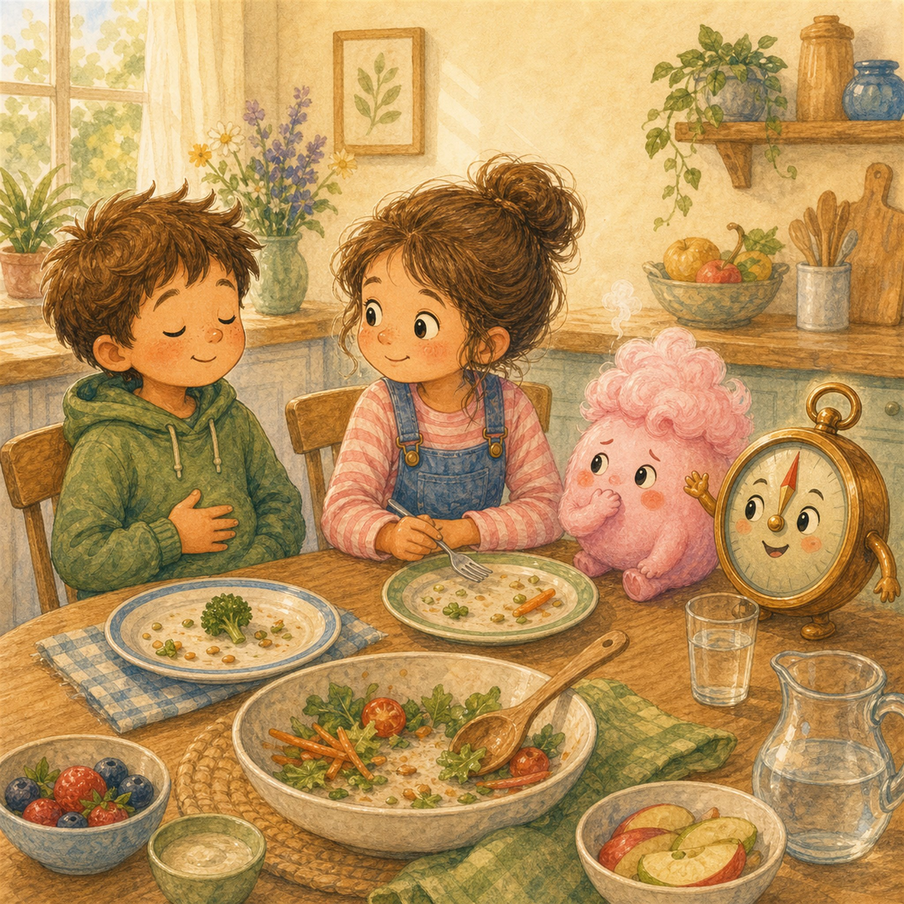
Noah wartete einen Moment und horchte in sich hinein. „Mein Bauch sagt: genug für heute."
„Dann hast du das Satt-Signal gehört", sagte Calli. „Du musst deinen Teller nicht leer essen, wenn du satt bist. Und du darfst nachnehmen, wenn du noch Hunger hast. Dein Bauch weiß es."
Mira legte die Gabel hin. „Meiner sagt auch genug."
Schlecki rülpste leise. „Meiner sagt … Entschuldigung."
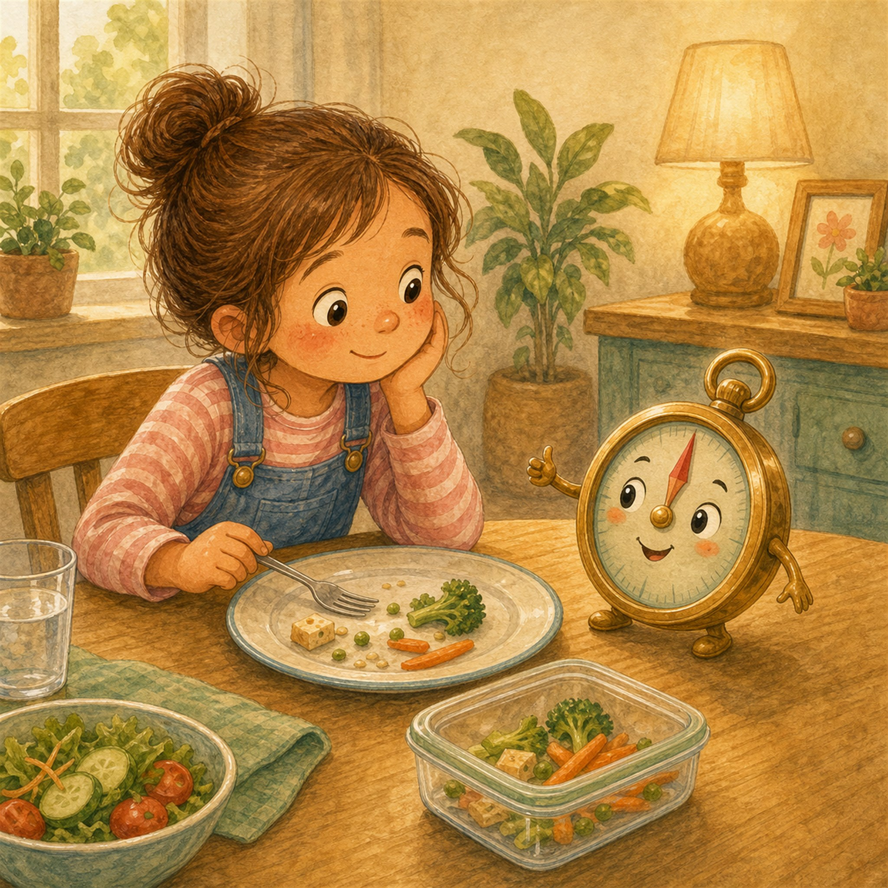
Auf Miras Teller war noch ein Rest. „Muss ich aufessen?", fragte sie leise.
„Nein", sagte Calli ruhig. „Wenn dein Bauch genug sagt, ist genug. Reste sind keine Schuld."
Mira atmete auf. „Und morgen?"
„Morgen hörst du wieder neu hin", sagte Calli. „Dein Bauch ist klüger, als du denkst."
Der Rest wanderte in eine Dose. „Für später", sagte Mira.
Callis Schlau-Seite
Der Bauch braucht ein paar Minuten, um dem Kopf „satt" zu melden.
Langsam essen hilft, das Satt-Signal zu hören.
Du musst deinen Teller nicht leeren, wenn du satt bist.
Hunger und Appetit sind normal — beides darf da sein.
Callis Satz für dieses Kapitel
Iss langsam — dann hörst du, was dein Bauch dir sagt.
Mitmach-Kompass
Nimm einen Bissen.
Leg den Löffel oder die Gabel kurz ab.
Kaue langsam und zähle bis fünf.
Frag deinen Bauch: noch Hunger oder schon genug?
Es gibt keine falsche Antwort.
„Bei mir dauert das ewig", sagte Noah. „Kunst braucht Zeit", sagte Calli. „Und Essen auch."
Kinder haben oft ein gutes Gespür für Hunger und Sättigung — wenn wir es nicht überschreiben.
Hilfreich: das Kind über die Menge entscheiden lassen, Teller-leer-Regeln vermeiden, Essen nicht als Belohnung oder Strafe. So bleibt das körpereigene Satt-Signal erhalten („intuitives Essen").
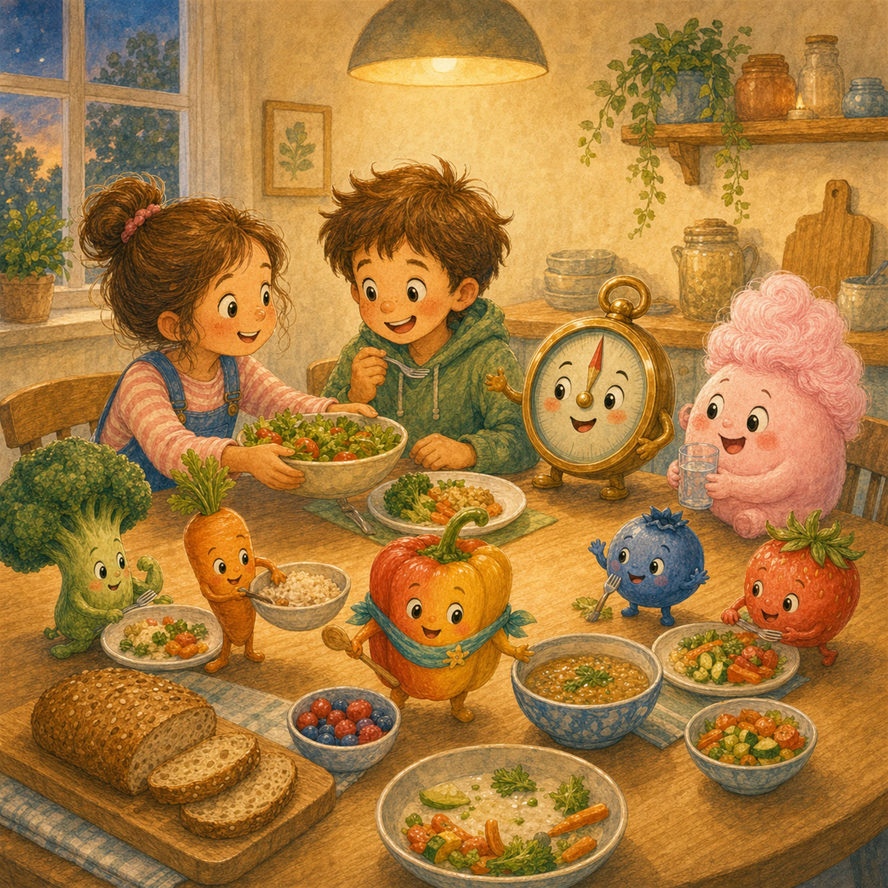
Am Abend saßen alle zusammen am Tisch — Mira, Noah, Calli, Schlecki und die Gemüse-Bande. Keiner hatte es eilig. Man reichte Schüsseln herum, erzählte vom Tag, lachte.
„Wisst ihr, was am allerbesten schmeckt?", fragte Calli.
„Eis?", riefen Noah und Schlecki gleichzeitig.
„Auch", sagte Calli. „Aber am allerbesten schmeckt Essen in guter Gesellschaft. Gemeinsam essen macht satt und froh zugleich."
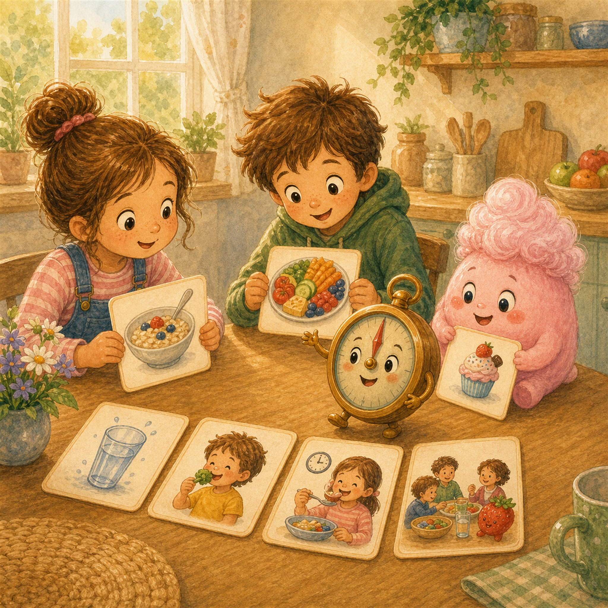
Am Sonntag legte Calli sieben bunte Karten auf den Tisch. „Der Wochen-Teller", sagte er. „Keine Regeln. Nur kleine Sachen zum Ausprobieren."
Auf den Karten stand nichts Kompliziertes: gut frühstücken, bunt essen, Wasser hinstellen, etwas Neues probieren, langsam essen, gemeinsam essen, Süßes in Ruhe genießen.
Mira nahm die Regenbogen-Karte. Noah nahm die Probier-Mut-Karte. Schlecki nahm — na klar — die Genieß-dein-Eis-Karte.
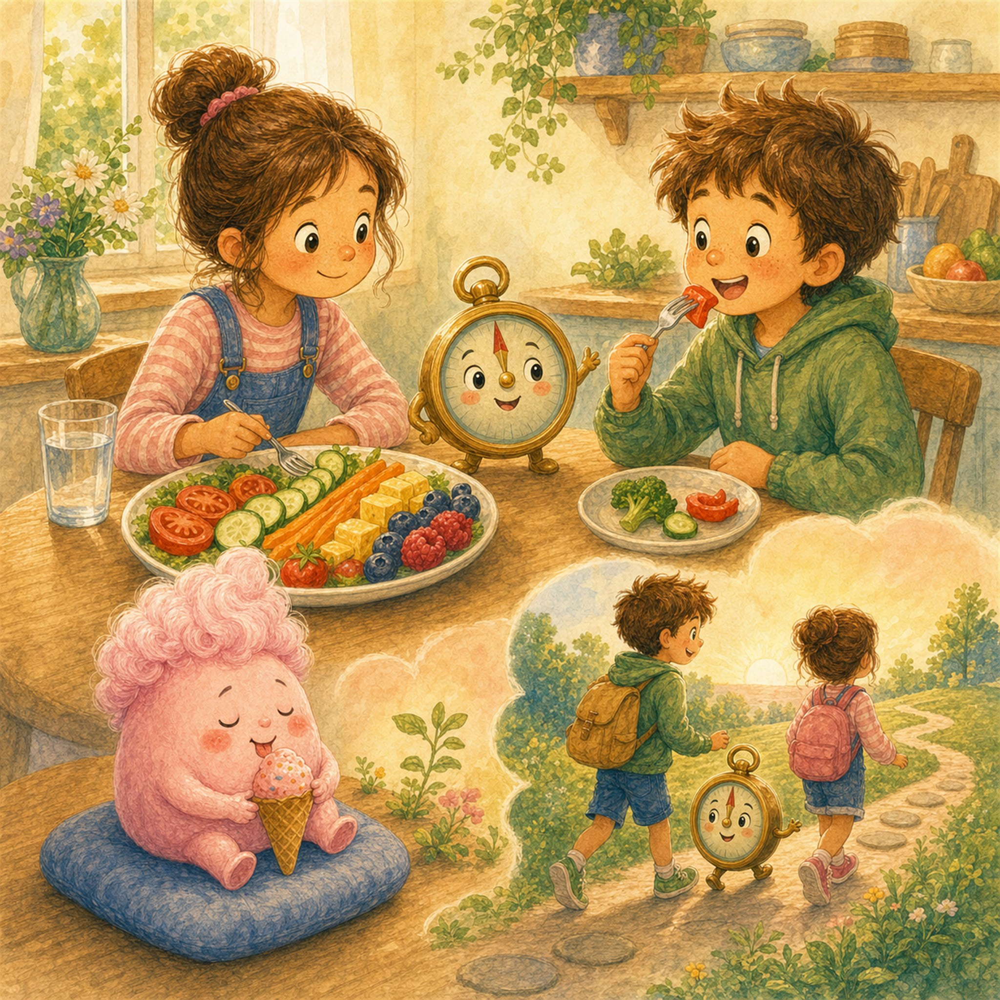
In der Woche probierten alle ihre Karte aus. Mira aß dreimal einen Regenbogen-Teller. Noah probierte Paprika — und beim dritten Mal fand er sie sogar lecker. Schlecki genoss sein Eis am Samstag ganz in Ruhe und hüpfte danach nur noch ein kleines bisschen.
„Habt ihr gemerkt?", fragte Calli. „Keiner musste alles perfekt machen."
„Nur ein bisschen besser als gar nicht", sagte Mira. „Genau", sagte Calli.
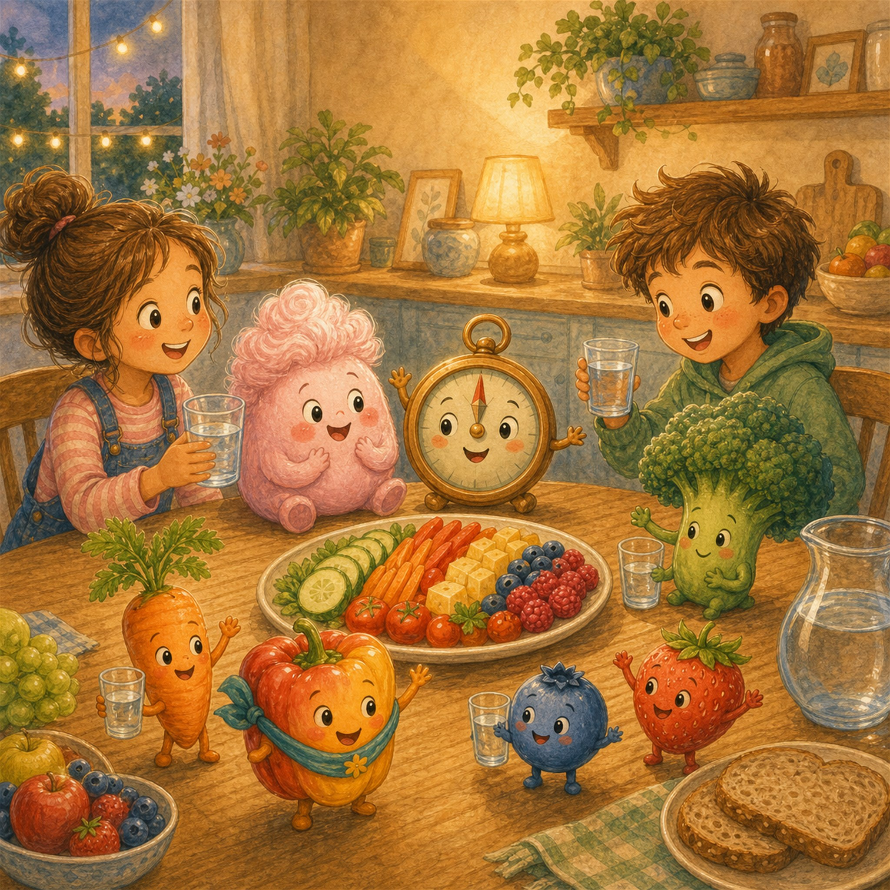
Am Ende der Woche saßen alle zusammen. Der Teller war bunt, das Wasser stand bereit, und Schlecki saß friedlich neben Bruno Brokkoli.
„Ihr habt viel gelernt", sagte Calli. „Was denn?", fragte Noah.
Mira zählte auf: „Gut frühstücken. Bunt essen. Wasser trinken. Auf den Bauch hören. Neues probieren. Und Süßes ist ein Gast, kein Bösewicht."
„Damit seid ihr offiziell", sagte Calli feierlich. „Teller-Helden."
1. Warum ist Frühstück wichtig? (a) Zum Angeben (b) Es füllt den leeren Tank für den Vormittag (c) Gar nicht
2. Was bedeutet „bunt essen"? (a) Nur bunte Bonbons (b) Viele Farben Obst und Gemüse (c) Den Teller anmalen
3. Was ist Süßes? (a) Verboten (b) Manchmal-Essen zum Genießen (c) Frühstück für jeden Tag
4. Was ist der beste Durstlöscher? (a) Wasser (b) Limo (c) Kakao mit Sahne
5. Warum langsam essen? (a) Damit man das Satt-Signal hört (b) Damit es kälter wird (c) Ohne Grund
6. Was tun bei neuem Gemüse? (a) Nie probieren (b) Mutig ein kleiner Probier-Bissen (c) Weglaufen
Auflösung: 1b · 2b · 3b · 4a · 5a · 6b — Teller-Held / Teller-Heldin!
callidus KIDS · Callis Gesundheits-Kompass
für einen echten Teller-Helden / eine echte Teller-Heldin
(Dein Name)
hat mit Calli, Schlecki und der Gemüse-Bande gelernt:
gut frühstücken, bunt essen, Wasser trinken, auf den Bauch hören, Neues probieren —
und dass kein Essen ein Bösewicht ist.
✂ Zum Ausschneiden
Kinder lernen einen guten Umgang mit Essen nicht durch Druck, sondern durch Vorbild, Wiederholung und eine entspannte Atmosphäre.
Bewährt hat sich eine klare Rollenteilung: Erwachsene entscheiden, was und wann angeboten wird — das Kind entscheidet, ob und wie viel es isst. Kein Belohnen mit Süßem, kein Bestrafen mit Essen, keine Kommentare über die Figur. So bleibt Essen etwas Freundliches.
Statt „Iss auf" helfen oft Fragen: Was schmeckt dir daran? Wie fühlt sich dein Bauch an — hungrig, satt oder unsicher? Wollen wir etwas Neues nur anschauen und riechen? Welche Farbe fehlt heute noch auf dem Teller?
Diese Fragen machen kein Kind automatisch zum Gemüse-Fan. Aber sie üben Aufmerksamkeit — und die ist die beste Grundlage.
Woher wissen Erwachsene das? Forscherinnen und Forscher beobachten und vergleichen, wie Essen und Trinken Kindern guttun: warum ein gutes Frühstück hilft, warum Abwechslung wichtig ist, warum Wasser das beste Alltagsgetränk ist, warum zu viel Zucker dem Körper und den Zähnen nicht guttut, und wie Kinder ihr Sättigungsgefühl behalten.
Vor der Veröffentlichung fachlich gegenlesen lassen. Startpunkte: DGE — Ernährungsempfehlungen für Kinder, BZfE-Empfehlungen, WHO-Zucker-Empfehlungen, Konzept „intuitives Essen" und Rollenteilung beim Essen (Ellyn Satter).
Die Quellen werden in der finalen Ausgabe kompakt angegeben.
callidus macht Gesundheitswissen verständlich — klar, freundlich, alltagstauglich.
Für Erwachsene gibt es Gesundheitswissen, Checks und digitale Angebote. Callis Gesundheits-Kompass übersetzt diese Haltung für Familien: mit weniger Druck, mehr Neugier und einem Kompass, der ehrlich stolz auf ein Glas Wasser ist.
Band 1: Hör auf deinen Körper — Körpersignale.
Band 2: Das Zucker-Monster — Essen, Trinken und Energie. (dieses Buch)
Band 3: Der Zappelmotor — Bewegung, Pausen und Gute-Laune-Funken.
Und weiter geht die Reise durch den Gesundheits-Kompass.
Callis Gesundheits-Kompass · Band 2: Das Zucker-Monster · Reihe: callidus KIDS · 1. Auflage 2026
Text, Konzept & Herausgabe: callidus A&M
Illustrationen: Digitale Aquarell-Illustrationen, KI-gestützt erstellt und redaktionell überarbeitet, auf Basis fester Character-Sheets.
Verantwortlich i. S. d. Presserechts: callidus A&M · Arnold Jedich (Geschäftsführer) · Gerstenstraße 12 · 86356 Neusäß · Deutschland · Kontakt: Telefon 0179 7007772 · info@callidus-am.de · www.callidus-am.de
© 2026 callidus A&M. Alle Rechte vorbehalten. Kein Teil dieses Werkes darf ohne schriftliche Zustimmung reproduziert, vervielfältigt oder verbreitet werden.
Dieses Buch vermittelt allgemeines Gesundheitswissen für Familien und ersetzt keine ärztliche Beratung, Diagnose oder Behandlung.
Ein Teil der Bildproduktion entsteht mit KI-gestützten Bildwerkzeugen und wird vor Veröffentlichung geprüft, überarbeitet und bei Amazon KDP entsprechend deklariert.
Die Texte vermitteln allgemeines Gesundheitswissen und ersetzen keine ärztliche Beratung, Diagnose oder Behandlung.
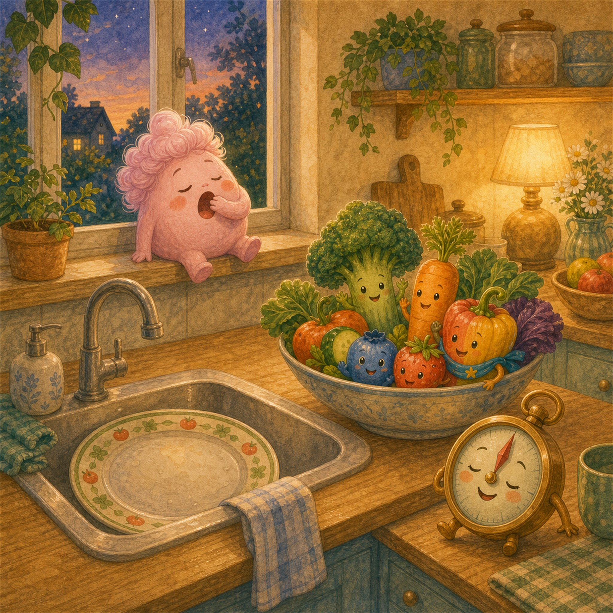
Am Abend stand der bunte Teller leer und zufrieden in der Spüle. Schlecki gähnte auf dem Fensterbrett. Die Gemüse-Bande war zurück in die Schale geklettert.
„Morgen wird wieder gegessen", sagte Calli leise. „Bunt?", fragte Mira. „Bunt." „Mit Wasser?", fragte Noah. „Mit Wasser."
„Mit Eis?", fragte Schlecki hoffnungsvoll. „Manchmal", sagte Calli. „Und heute war so ein Manchmal."
Calli klappte seine Nadel ein. Nicht ganz. Nur ein bisschen. Denn ein guter Kompass schläft nie völlig ein. Er ruht nur. Für morgen.
Und falls dein Bauch dir morgen etwas sagt, dann weißt du jetzt: Iss bunt. Trink Wasser. Hör auf deinen Bauch. Und lass Süßes ein netter Gast sein.
Ganz leise sagt Calli: „Erst schmecken. Dann genießen. Und immer freundlich wählen."